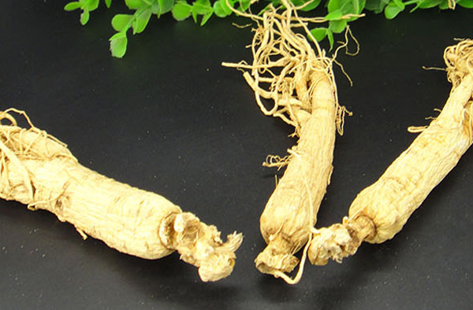

鲜人参的吃法主要是直接含服、炖汤使用、泡酒用以及蒸煮吃。这几种食用方法效果都非常好，鲜人参虽然滋补但是并不能吃太多，吃太多人参会导致滋补太过出现流鼻血的情况。长期便秘的患者最好不要吃鲜人参，还有太过虚弱的患者也不要使用鲜人参。

1、直接含服
鲜人参可以直接含服，将新鲜的人参洗净后直接切片含服，一个含服20分钟后吐出即可。这种吃人参的方法非常简单，适合不会烹饪的人使用。如果希望人参的药效吸收的多一些的可以将含片人参放入嘴巴含一会后，慢慢的咀嚼，然后将人参咀嚼很碎后吃下去。切片一定要切的比较薄，不能太厚，太厚的人参药效会流失。
2、炖汤使用
新鲜人参可以熬汤炖汤使用，像参鸡汤就可以用新鲜的人参。将人参洗净，然后放到鸡的身体中加上调味料一起炖煮，一般要炖煮在30分钟以上，当然炖煮的时间越长，药效发挥的越好。但是参鸡汤在慢熬的时候不能超过4个小时。食用参鸡汤要注意不能将一份参鸡汤几天多次的反复熬煮。
3、泡酒使用
新鲜的人数可以用来泡酒使用，可以将人参放到泡酒罐中加入粮食酒一起泡酒饮用。人参酒可以送给新婚夫妻以及身体虚弱的人，有着帮助滋补的功效。人参泡酒还可以和枸杞一起，有着很好的滋补功效。
4、蒸着吃
新鲜人参可以切片放入碗中隔水蒸着吃，效果好。